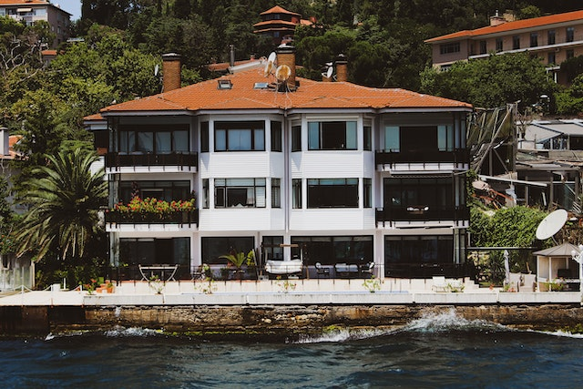
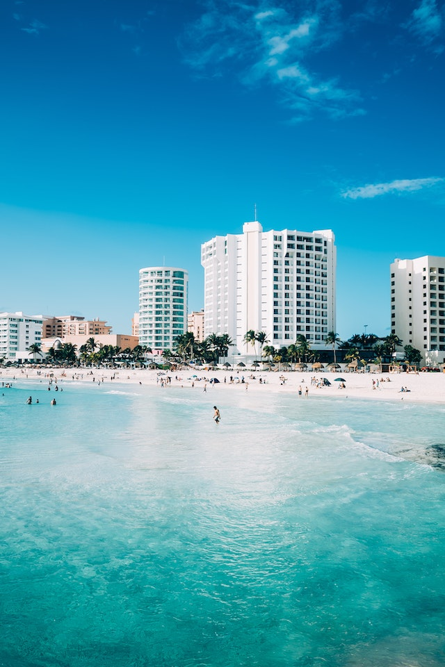

Os 5 melhores hotéis do Ceará
O Ceará, com suas belas praias e cultura rica, oferece algumas das melhores condições do Brasil. Aqui os 5
melhores hotéis da região:
1. Hotel Maravilha Fortaleza
Localizado no coração de Fortaleza, este hotel oferece vistas espetaculares do mar e conforto de luxo.
- Localização: Fortaleza
-
- Categoria: 5 estrelas
- Facilidades: Piscina, Spa, Wi-Fi gratuito, Restaurante gourmet
- Preço médio por noite: R$500
- Avaliação: 9,5
Endereço:Av. Beira Mar, 2500 - Meireles, Fortaleza - CE, 60165-121

2. Resort Sol Nascente - Jericoacoara
Conhecido por sua incrível piscina de borda infinita e acesso direto à praia de Jeri.
- Localização: Jericoacoara
- Categoria: 5 estrelas
- instalações: Piscina de borda infinitas, Aulas de surf, Jantares na praia
- Preço médio por noite: R$700
- Avaliação: 9,2
Endereço: R. das Dunas, 30 - Jericoacoara, Jijico de Jericoacoara - CE, 62598-973

Pousada Tranquilidade - Canoa Quebrada
Uma opção mais íntima para quem busca sossego em meio às dunas.
- Localização:Canoa Quebrada
- Categoria: 5 estrelas
- instalações: Piscina de borda infinitas, Aulas de surf, Jantares na praia
- Preço médio por noite: R$700
- Avaliação: 9,2
Endereço:
4. Hotel Vila Galé Cumbuco
Localizado na praia de Cumbuco, este hotel oferece uma experiência completa para toda a família.
- Localização: Cumbuco
- Categoria: Resort 5 estrelas
- instalações:Piscina, Spa, Wi-Fi gratuito, Restaurante gourmet
- Preço médio por noite: R$500
- Avaliação: 9,5
Endereço: Av. dos Coqueiros, 1000 - Cumbuco, Caucaia - CE, 61619-000